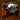
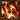

YO HO HO... E UMA GARRAFA DE RUM!
A ORIGEM DE GANG PLANK
Gangplank foi um capitão pirata que ficou conhecido por comandar Águas de Sentina sobre um regime de medo, violência e muita astúcia. Ele ficou rico atacando outros navios e portos de comércio nas rotas dos doze mares, fazendo dele um inimigo poderoso para muitos, todos falavam da tamanha crueldade e violência com que ele e sua tripulação agiam.
A APARENCIA DO CAPITÃO DOS MARES
Gangplank como um pirata, usa uma roupa tradicional de marinheiro, um chapéu de cone e uma faixa vermelha com um casaco preto com detalhes dourados possivelmente de veludo, ele possui ainda partes metálicas no seu corpo como no seu braço e mão, seu corpo é composto de inúmeras cicatrizes, e em seu rosto ele possui uma enorme barba negra com tons em grisalho, seu olhar é frio e duro. Na sua cintura ele carrega uma pistola de uma mão e sua espada de pirata na outra.
GANGPLANK SPOTLIGHT
GANGPLANK HABILIDADES
 A espada de Gangplank pega fogo periodicamente, fazendo com que o próximo ataque básico queime o alvo, causando (+ 100% Dano de Ataque bônus) de dano verdadeiro bônus durante 2,5 segundos e concedendo a Gangplank Julgamento de Fogo 30% velocidade de movimento bônus por 2 segundos. Torres vão receber (+ 50% Dano de Ataque bônus) de dano verdadeiro (metade do dano normal).Destroir um Barril de Pólvora instantaneamente recarrega Julgamento de Fogo e concede a ele velocidade de movimento bônus.
A espada de Gangplank pega fogo periodicamente, fazendo com que o próximo ataque básico queime o alvo, causando (+ 100% Dano de Ataque bônus) de dano verdadeiro bônus durante 2,5 segundos e concedendo a Gangplank Julgamento de Fogo 30% velocidade de movimento bônus por 2 segundos. Torres vão receber (+ 50% Dano de Ataque bônus) de dano verdadeiro (metade do dano normal).Destroir um Barril de Pólvora instantaneamente recarrega Julgamento de Fogo e concede a ele velocidade de movimento bônus.
 Gangplank atira no inimigo alvo com a sua pistola, causando dano físico e aplicando ao contato, embora não aplique Julgamento de Fogo. Negociarrr pode Acerto crítico icone critar .DANO FÍSICO: 20 / 45 / 70 / 95 / 120 (+ 100% Dano de Ataque)
Se Negociarrr matar o alvo, Gangplank saqueia gold de Ouro gold e Serpentes de Prata, as quais mais tarde podem ser gastas para aprimorar Barragem de Canhão.
Gangplank atira no inimigo alvo com a sua pistola, causando dano físico e aplicando ao contato, embora não aplique Julgamento de Fogo. Negociarrr pode Acerto crítico icone critar .DANO FÍSICO: 20 / 45 / 70 / 95 / 120 (+ 100% Dano de Ataque)
Se Negociarrr matar o alvo, Gangplank saqueia gold de Ouro gold e Serpentes de Prata, as quais mais tarde podem ser gastas para aprimorar Barragem de Canhão.
 ATIVO: Gangplank consome uma grande quantidade de fruta cítrica, retirando todos os efeitos debilitantes e o curando.]
ATIVO: Gangplank consome uma grande quantidade de fruta cítrica, retirando todos os efeitos debilitantes e o curando.]
 ATIVO: Gangplank posiciona um Barril de Pólvora no local alvo por 60 segundos, que se conecta a barris próximos. Barris possuem 3 de vida e recebe 1 de dano cada vez que Gangplank ou campeão inimigo atacar eles, e passivamente perdem 1 de vida Se um campeão inimigo der o último golpe, o barril é desarmado e ele recebe 10 de Ouro.
Se Gangplank der o último golpe, esse ataque causa dano físico a todos os inimigos próximos, aplicando lentidão por 2 segundos. Explosões ignoram 40% da armadura do alvo, e campeões inimigos levam dano físico bônus.
LENTIDÃO: 40 / 50 / 60 / 70 / 80%
BÔNUS DE DANO A CAMPEÕES: 60 / 90 / 120 / 150 / 180
A explosão causa uma reação em cadeia com outros barris conectados, independente da vida atual deles, porém, inimigos só podem levar dano de um barril. Se Negociarrr Negociarrr for usado para detonar Barril de Pólvora, a explosão saqueia ouro de todos os inimigos que atingir
ATIVO: Gangplank posiciona um Barril de Pólvora no local alvo por 60 segundos, que se conecta a barris próximos. Barris possuem 3 de vida e recebe 1 de dano cada vez que Gangplank ou campeão inimigo atacar eles, e passivamente perdem 1 de vida Se um campeão inimigo der o último golpe, o barril é desarmado e ele recebe 10 de Ouro.
Se Gangplank der o último golpe, esse ataque causa dano físico a todos os inimigos próximos, aplicando lentidão por 2 segundos. Explosões ignoram 40% da armadura do alvo, e campeões inimigos levam dano físico bônus.
LENTIDÃO: 40 / 50 / 60 / 70 / 80%
BÔNUS DE DANO A CAMPEÕES: 60 / 90 / 120 / 150 / 180
A explosão causa uma reação em cadeia com outros barris conectados, independente da vida atual deles, porém, inimigos só podem levar dano de um barril. Se Negociarrr Negociarrr for usado para detonar Barril de Pólvora, a explosão saqueia ouro de todos os inimigos que atingir
 ATIVO: Gangplank sinaliza para que seu navio bombardeie uma área por 8 segundos, invocando 12 ondas de balas de canhão em grupos de 3, a cada 2 segundos. Visão icone revelando o local pela duração
Cada onda de balas de canhão causam dano mágico ao inimigos acertados e lentidão neles de 30% por 0,5 segundos.
Gangplank pode comprar melhorias para seu navio na loja, ao custo de 500 Serpentes de Prata cada, melhorando Barragem de Canhão:
ATIVO: Gangplank sinaliza para que seu navio bombardeie uma área por 8 segundos, invocando 12 ondas de balas de canhão em grupos de 3, a cada 2 segundos. Visão icone revelando o local pela duração
Cada onda de balas de canhão causam dano mágico ao inimigos acertados e lentidão neles de 30% por 0,5 segundos.
Gangplank pode comprar melhorias para seu navio na loja, ao custo de 500 Serpentes de Prata cada, melhorando Barragem de Canhão:
 FILHA DA MORTE: A primeira bala de canhão é grande e atinge o centro da barragem, causando dano verdadeiro equivalente a um grupo de balas a todos os inimigos que atingir e causando lentidão de 60% por 1,5 segundos.
FILHA DA MORTE: A primeira bala de canhão é grande e atinge o centro da barragem, causando dano verdadeiro equivalente a um grupo de balas a todos os inimigos que atingir e causando lentidão de 60% por 1,5 segundos.- LEVANTAR O MORAL: Aliados na área recebem 30% de bônus de velocidade de movimento, que permanece por após sair dela. Gangplank também se beneficia desse efeito.
- DISPARAR À VONTADE: Barragem de Canhão atira 6 ondas adicionais (dois grupos de balas).